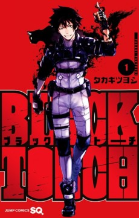

A SHINOBI STORY WITH A SUPERNATURAL EDGE
Black Torch follows Jiro Azuma, a young man descended from a long line of shinobi who can communicate with animals. His unusual life changes when he rescues Rago, a black cat who is actually a powerful supernatural being. That meeting pulls Jiro into a hidden conflict and gives the series its central contrast: everyday animal communication on one side, secret supernatural warfare on the other.
The premise is compact but effective. Jiro’s instinct to help others is not separated from his combat ability; it is what leads him into danger. Rago brings mystery and personality to the partnership, while the wider war introduces enemies and organisations that challenge Jiro’s understanding of his family legacy. The result is a fast-moving manga with a clear focus on bonds, inheritance, and the cost of using power responsibly.
JIRO AND RAGO
The relationship between Jiro and Rago gives Black Torch its emotional centre. Their partnership begins through an act of rescue, not a formal mission, so trust has to develop through experience. Jiro’s shinobi background makes him capable, but Rago’s supernatural nature means strength alone cannot solve every problem. Their different perspectives create room for humour, friction, and genuine loyalty as the story expands.
WHY IT MATTERS
Black Torch combines shinobi action with supernatural mystery and a strong animal-companion hook. Its world introduces danger quickly, but the story remains grounded in the question of how people choose to use inherited abilities. Jiro and Rago work because their partnership is built on curiosity and protection rather than convenience. For readers who enjoy compact battle manga with a distinct supernatural premise, it offers a sharp and energetic starting point.
READ THE MANGA
Read the official Black Torch listing from VIZ →
WATCH THE ANIME
Open the official Sword Art Online listing →